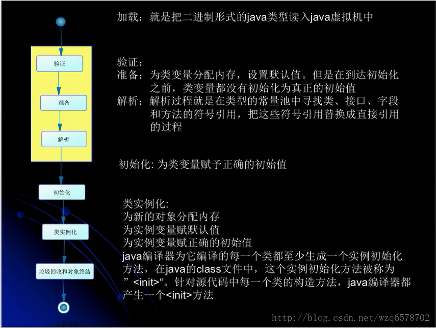
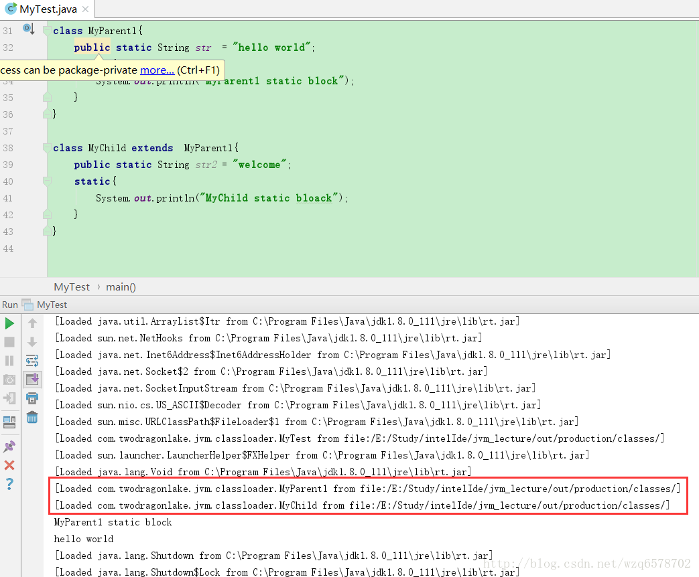
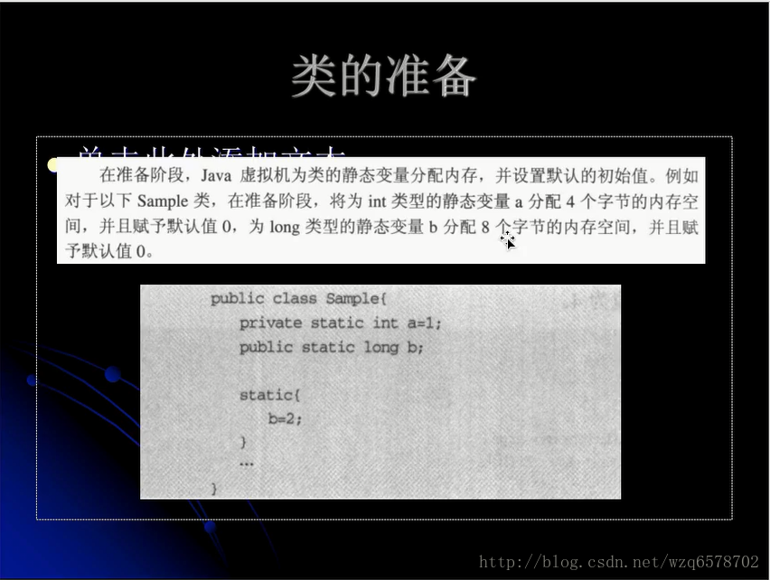
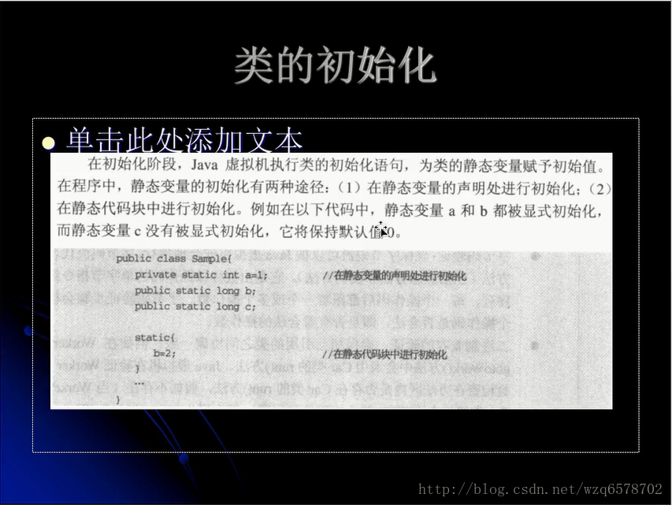
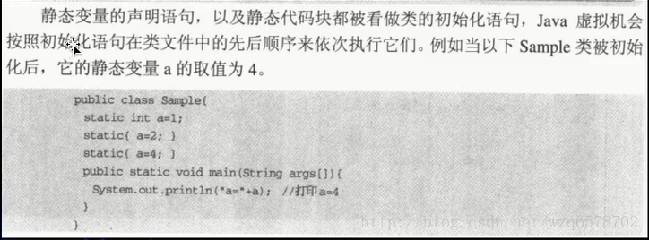
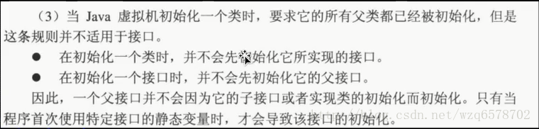
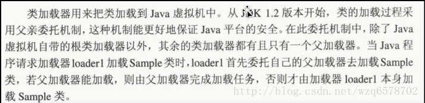
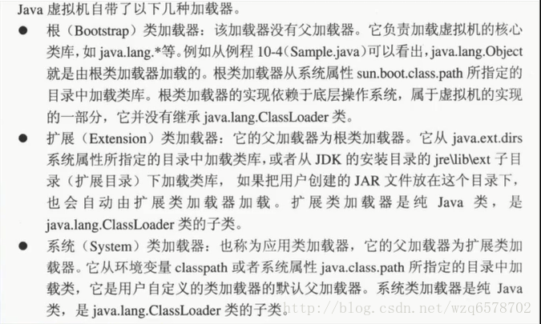
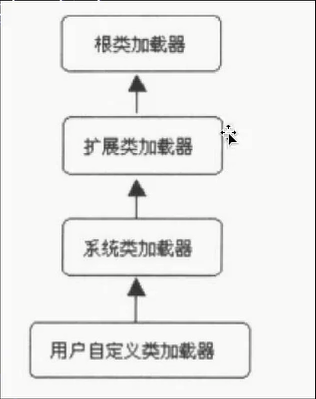

类进入内存的过程：

- 类的加载的最终产品是位于内存中的Class对象。
- Class对象封装了类在方法区内的数据结构，并且向Java程序员提供了访问方法区的数据的接口。类是反射的入口。
有两种类型的类加载器：
- Java虚拟机自带的加载器
- 根类加载器(Bootstrap)
- 扩展类加载器(Extension)
- 系统(应用)类加载器(System)
- 用户自己定义的类加载器
- java.lang.ClassLoader的子类
- 用户可以定制的加载方式
类的加载：
类的加载器并不需要等到某个类被“首次主动使用”时再加载它。
怎么理解这句话呢，我们就拿第一篇 文章的例子说明：
我们加上-XX:+TraceClassLoading 参数1
2
3
4
5
6
7
8
9
10
11
12
13
14
15
16
17
18public static void main(String[] args) {
System.out.println(MyChild.str);
}
}
class MyParent1{
public static String str = "hello world";
static{
System.out.println("MyParent1 static block");
}
}
class MyChild extends MyParent1{
public static String str2 = "welcome";
static{
System.out.println("MyChild static bloack");
}
}
运行结果：

虽然子类没有被初始化，但是通过日志可以看出子类已经被加载了。
- JVM规范允许类加载器在预料将要被使用时就预先加载它，如果在预先加载的过程中遇到.class文件缺失或存在错误，类加载器必须在程序首次主动使用该类时才报告错误(LinkError错误)
- 如果这个类一直没有被程序主动使用，那么类加载器就不会报告错误。
类的验证：
类的验证的内容
- 类文件的结构检查
- 语义检查
- 字节码检查
- 二进制兼容性的验证
类的准备：

类的初始化：


类的初始化步骤：
- 假如这个类还没有被加载和链接，那就先进行加载和链接
- 假如类存在直接父类，并且这个父类还没有被初始化，那就先初始化直接父类
- 假如类中存在初始化语句，那就依次执行这些初始化语句
类的初始化时机：
（1）主动使用（七种）
创建类的实例。
访问某个类或者接口的静态变量，或者对该静态变量赋值。
调用类的静态方法。
反射 （如Class.forName(“com.test.Test”)）
初始化一个类的子类
Jav啊虚拟机启动时被标明为启动类的类(Java Test)
JDK1.7开始提供的动态 语言支持：
Java.lang.invoke.MethodHandle实例的解析结果REF_getStattic REF_putStatic REF_invokeStatic句柄对应的类如果没有初始化，则初始化(了解)
除了以上七中情况，其他使用Java类的方式都被看做是对类的被动使用，都不会导致类的初始化(指的是加载，连接，初始化这个步骤的初始化)（2）

验证第一条：在初始化一个类时，并不会先初始化它所实现的接口
1 | public class MyTest5 { |
输出：
1 | 5 |
如果我们把MyParent5和MyChild5都改为Class呢？
答案是输出：
1 | MyParent5 invoked! |
因为子类的初始化会想初始化父类
然后我们如果把MyChild5的b改为【public static final int b = 5;】这样运行结果是什么呢？
答案是：
1 | 5 |
因为b是常量，常量会编译的时候就会放在MyTest5的常量池当中，甚至可以删除MyParent5和MyChild5的Class文件。
再进一步：
1 | public class MyTest5 { |
打印结果是什么呢，肯定是先5吧
如果把Grandapa、MyParent5全部改成Class呢：
1 | public class MyTest5 { |
打印：
1 | Grandapa invoked! |
以为子类运行的时候会想去初始化它的父类。
验证：在初始化一个接口是，并不会先初始化它的父接口
1 |
|
打印结果：
1 | MyParent5_1 invoked! |
可以看到MyGrandpa5_1并没有被初始化。
（3）只有当程序访问的静态变量或静态方法确实在当前类或当前接口中定义时，才可以认为是对类或接口的主动使用。
类加载器


除了以上虚拟机自带的类加载器外，用户还可以定制自己的类加载器。Java提供了抽象类Java.lang.ClassLoader，所有用户自动以的类加载器都应该继承ClassLoader类。
